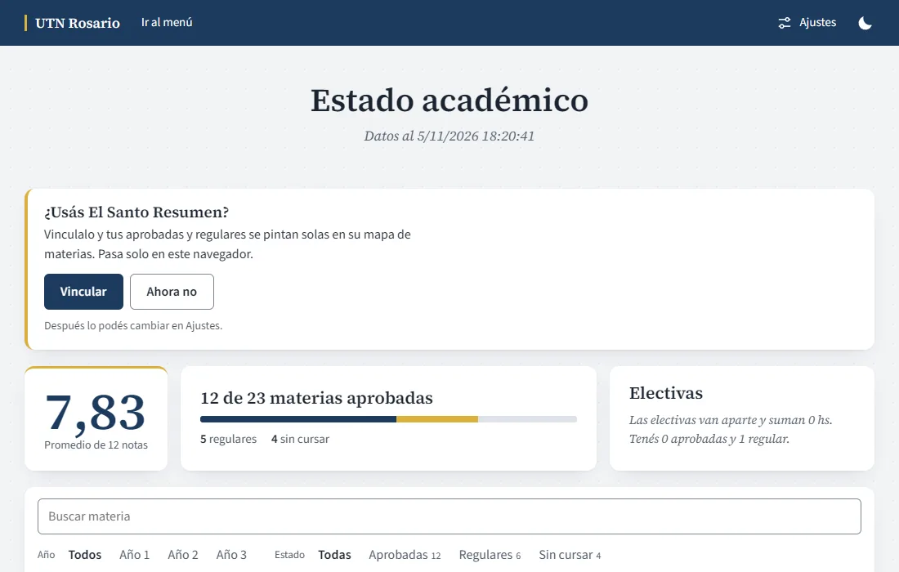
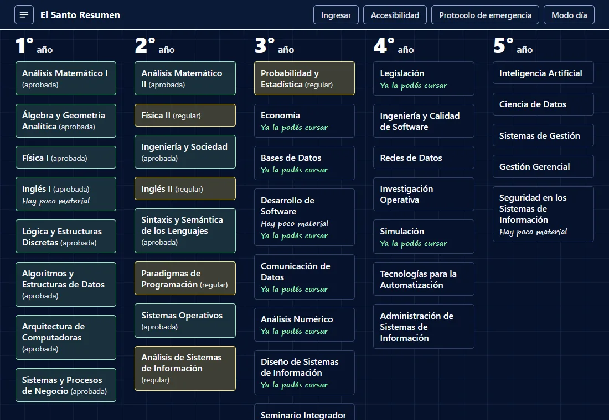
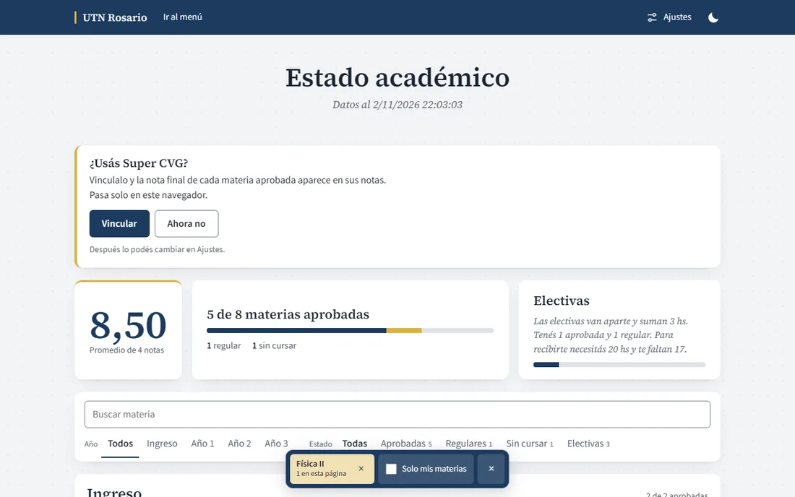
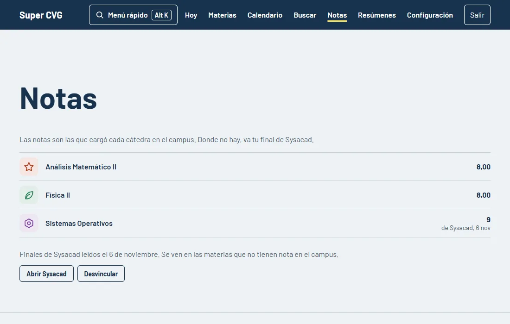
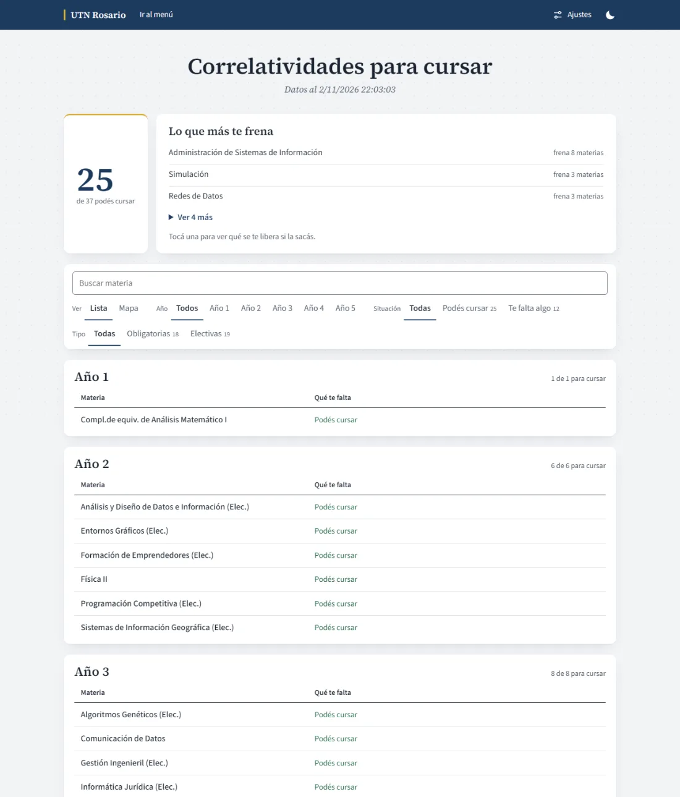
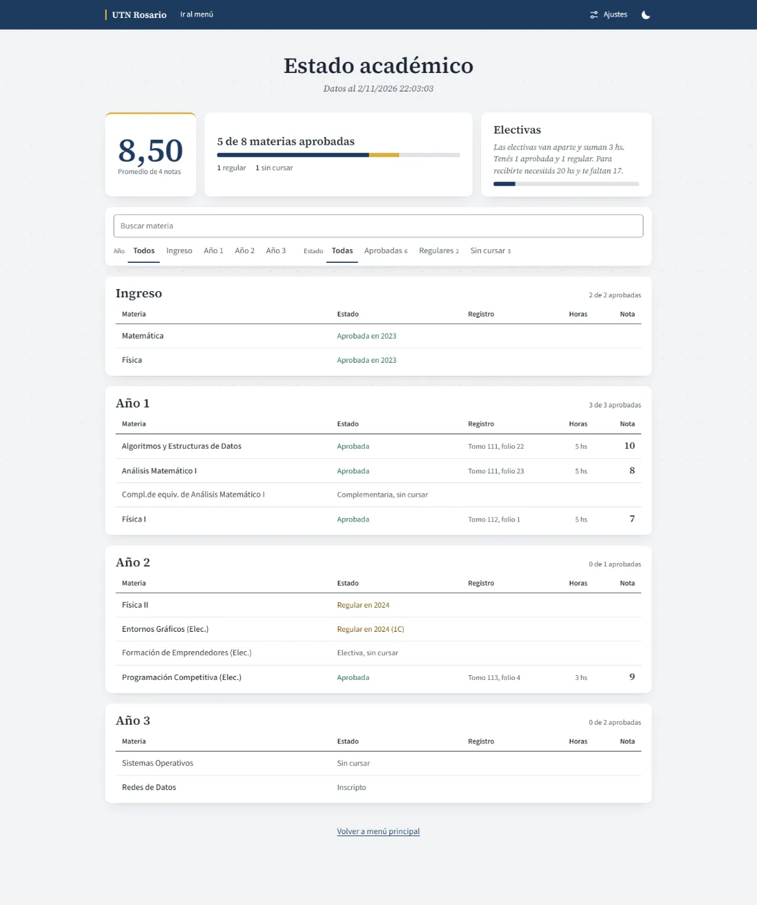
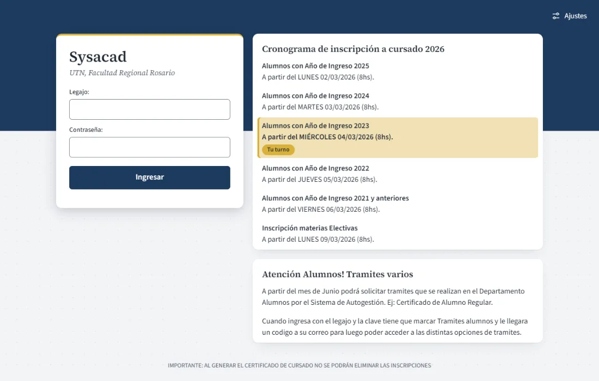

Sysacad Lindo
Una extensión para Chrome o Edge que ordena Sysacad. Tu carrera por año, las correlativas en un mapa, modo oscuro y filtros. No guarda tu contraseña ni manda nada a ningún lado.
Bajar Sysacad Lindo 2.4.0 Archivo ZIP, 184 KB
Las inscripciones todavía no están probadas
Alumnado tiene cerradas las inscripciones, así que no pudimos probar esa parte de la extensión. Si al inscribirte algo no anda, desactivala en chrome://extensions o edge://extensions y usá Sysacad como siempre.
Tu mapa de materias, pintado solo
Nuevo en la 2.2.0.
Vinculá Sysacad Lindo con El Santo Resumen y tus aprobadas se pintan de verde y tus regulares de amarillo en el mapa de materias. Además te marca qué materias ya podés cursar.
Se actualiza cada vez que entrás a Estado académico. Solo pasan los nombres de las materias y su estado, sin notas, y nada sale de tu navegador.
Se vincula con un toque desde Sysacad y se apaga cuando quieras en Ajustes.

En Sysacad, tocás «Vincular» en Estado académico. 
En El Santo Resumen, aprobadas en verde y regulares en amarillo.


Tus finales y tus pestañas, en Super CVG
Las pestañas, nuevo en la 2.4.0.
Vinculá Sysacad Lindo con Super CVG. La nota final de cada materia aprobada aparece en Notas, donde la cátedra no cargó nada en el campus.
Cada pestaña de Sysacad que abrís queda guardada: Estado académico, parciales, exámenes, plan, correlativas y certificados. En la pantalla Sysacad de Super CVG ves la última copia, aunque Sysacad no ande.
Pasan solo textos y tablas, de la extensión a Super CVG dentro de tu navegador. Ningún servidor en el medio.
Se vincula desde Sysacad o desde Notas en Super CVG. En Ajustes apagás el vínculo o solo las pestañas.

En Sysacad, tocás «Vincular» en Estado académico. 
En Super CVG, tu final aparece donde la cátedra no cargó nota.


Cómo se instala
Bajar Sysacad Lindo 2.4.0 Archivo ZIP, 184 KB
- Descomprimí el archivo. Te queda una carpeta llamada
sysacad-lindo. - Abrí
chrome://extensionsen Chrome oedge://extensionsen Edge. Copialo en la barra de direcciones. - Prendé el «Modo de desarrollador».
- Tocá «Cargar descomprimida» y elegí la carpeta
sysacad-lindo. - Entrá a Sysacad como siempre. La extensión anda en
alumnos.frro.utn.edu.ary, si la vinculás, también le pasa a El Santo Resumen tus aprobadas y regulares.
Para pasar a una versión nueva, bajala, reemplazá la carpeta y tocá el botón de recargar de la extensión en la misma página.
Qué hace
- Estado académico por año, con tu promedio y cuánto te falta.
- Correlativas por año, con «Lo que más te frena» arriba.
- «¿Y si la saco?» Tocás una materia y te muestra qué podrías cursar si la aprobás.
- Mapa de correlativas de toda la carrera.
- Certificados, cada uno en una tarjeta, con el aviso de Sysacad al lado.
- Vínculo con El Santo Resumen. Si querés, tus aprobadas y regulares se pintan solas en su mapa de materias. Pasa en tu navegador, y solo va qué materias, sin notas.
- Filtros y buscador en las tablas largas.
- Modo oscuro, tres vistas y tamaño de letra.
- Modo para daltonismo y alto contraste.
Trae frases de fondo con humor de pasillo, alguna con una mala palabra. Se apagan desde Ajustes.
Tu privacidad
Usa solo el almacenamiento de tu navegador, para tus ajustes. No lee ni guarda contraseñas, no manda nada a ningún servidor y no envía formularios por su cuenta. Todo lo hacés vos.
No es de la UTN ni de Sysacad. Si Sysacad cambia, puede dejar de andar hasta la próxima versión.
Cómo se ve
Las capturas tienen datos inventados.
Mapa de correlativas, por año. 
Correlativas para cursar, con lo que más te frena arriba. 
Estado académico por año, con tu promedio. El mismo estado, en modo oscuro. 
La entrada de Sysacad, ordenada.